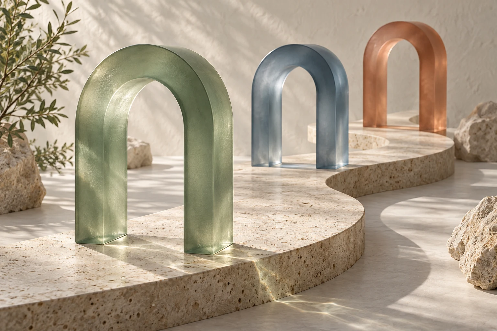

Definir
Especialidad, zona y asuntos que encajan con la capacidad del despacho.
Conectamos captación, filtro y seguimiento para que sepas qué consultas avanzan y dónde actuar. Una especialidad y un siguiente paso claro.

El formulario es el principio. Después hay que responder, confirmar el encaje y llegar a una cita.
Cuando cada paso está registrado, el despacho puede distinguir si necesita más demanda, un filtro mejor o una atención más rápida. Ahí empezamos.
Localicemos el primer punto a mejorar
EL MÉTODO, EN CINCO PASOSEspecialidad, zona y asuntos que encajan con la capacidad del despacho.
Una campaña y una página que hablan del servicio que se busca.
Criterios iniciales acordados y un contacto que se pueda atender.
Responsable, siguiente acción, agenda y recordatorios.
Consultas válidas, citas asistidas y asuntos aceptados.
El piloto busca descubrir qué funciona en tu servicio y tu zona. Las decisiones se toman con datos del despacho.
Quiero revisar mi procesoEl despacho decide el encaje jurídico.
La especialidad cambia el mensaje, el filtro y las preguntas de la primera consulta.

Filtro inicial, respuesta y trazabilidad hasta expediente aceptado.

Clasificar la necesidad y preparar una consulta útil desde el principio.

Primera conversación discreta, encaje por servicio y claridad sobre el siguiente paso.
Para un despacho con capacidad de atender nuevos asuntos, una especialidad definida y un responsable de las consultas.
Antes de empezar, dejamos por escrito qué se entrega, quién lo atiende y cómo se revisa.
84 € de IVA · Total factura de gestión: 484 €
Publicidad pagada a Google por separado. Preparación, landing, CRM y licencias se presupuestan según necesidades. El número de clientes depende de la demanda, el encaje y la atención; no se garantiza.
Definir el pilotoPor un diagnóstico de tu servicio, zona, captación actual y atención. Después definimos una propuesta si hay encaje.
Revisamos lo que ya existe y concretamos qué tramo falta. Si la infraestructura funciona, puede aprovecharse dentro del alcance acordado.
No. Se acuerdan entregables y medición. La demanda, la competencia, la capacidad de atención y el encaje influyen en el resultado.
No. Es la tarifa neta mensual de gestión de Google Ads. Los medios se pagan a Google. Alta, landing y herramientas se presupuestan aparte.
Especialidad, zona, objetivo y capacidad para atender. Son útiles las cifras agregadas de consultas, citas y asuntos. No necesitamos documentación de clientes.
Lo comentamos en la revisión. Puede ser mejor resolver primero la capacidad o la medición antes de contratar captación.
Cuéntanos qué especialidad quieres impulsar. Prepararemos el mensaje para abrir una conversación por WhatsApp.
637 371 993Tú revisas y envías el mensaje desde WhatsApp. Aquí no se contrata el servicio ni se envían datos automáticamente.